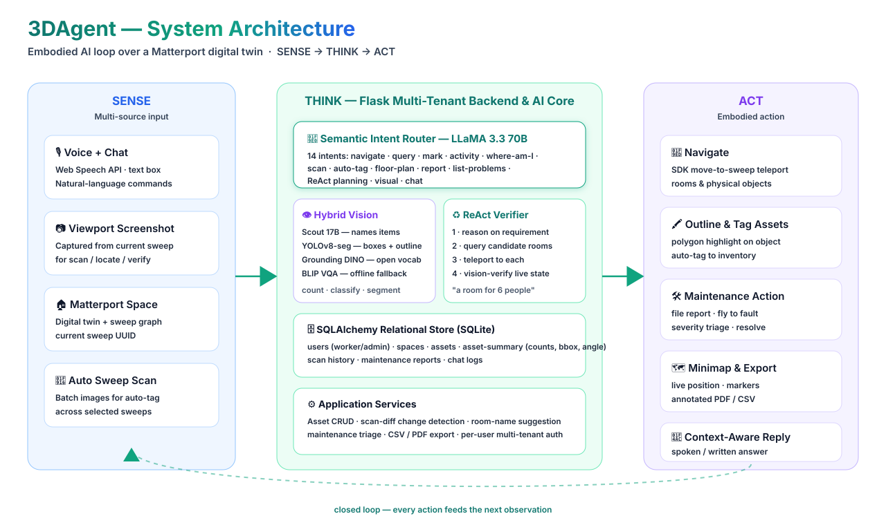

An embodied, conversational AI agent built on Matterport digital twins. It fuses large language models, multimodal computer vision, and the Matterport SDK to turn passive 360° tours into spaces you can talk to, scan, navigate, and maintain — automating asset cataloguing and facility audits for non-technical users.
Traditional 3D spaces are passive and disconnected; facilities teams spend hours cataloguing assets by hand from floor plans. 3DAgent maps natural-language intent to action, auto-catalogues assets from a screenshot, and closes the loop: detect → tag → query → report → triage → resolve.

"I want to cook" or "take me to the nearest fire extinguisher" — Web Speech API enables hands-free control.
Scout + YOLOv8-seg + Grounding DINO detect, count, classify, outline, and auto-tag assets from a viewport.
Reasons on a request, finds candidate rooms, teleports, and verifies live state by vision before recommending.
Voice-file a fault pinned to a sweep; severity ranking, status lifecycle, and fly-to faulty equipment.
Full CRUD, per-area counts, scan-history change detection, one-click CSV / PDF export.
Live position tracking with asset markers; export annotated floor plans as PNG / PDF.
Built for facilities & operations managers, factory/warehouse supervisors, lab & hospital asset coordinators, and real-estate / retail teams. Replaces clipboard audits, static PDF floor plans, spreadsheet registers, and disconnected maintenance tickets — hours of cataloguing collapse into a few screenshots.
Conversational Q&A and instant inventory across many settings:
| Language AI | LLaMA 3.3 70B (intent + chat) via Groq |
| Vision (cloud) | Llama 4 Scout 17B — open-vocab naming & room labelling |
| Vision (local) | YOLOv8 / YOLOv8-seg, Grounding DINO, BLIP VQA (fallback) |
| ML runtime | PyTorch · Ultralytics · HF Transformers |
| Backend | Flask + SQLAlchemy · SQLite · FPDF2 |
| Frontend | HTML5/CSS3 · JS ES6+ · Jinja2 · Web Speech & Canvas API |
| 3D platform | Matterport SDK (twin + sweep navigation) |
Unit evaluators (label match, vision parser, activity map, scan-diff, latency) pass 100%; intent & ReAct parser run as live-API integration tests. DB endpoints respond in ~1–2 ms (p95).
Faculty of Computing & Informatics, Multimedia University (MMU).
3DAgent shows that frontier LLMs and computer vision can be fused with immersive 3D digital twins — using only existing models and open web standards — to create a platform where users speak, scan, navigate, and maintain, replacing manual facility audits and static floor plans with an AI-driven pipeline that is fast, scalable, resilient, and accessible.